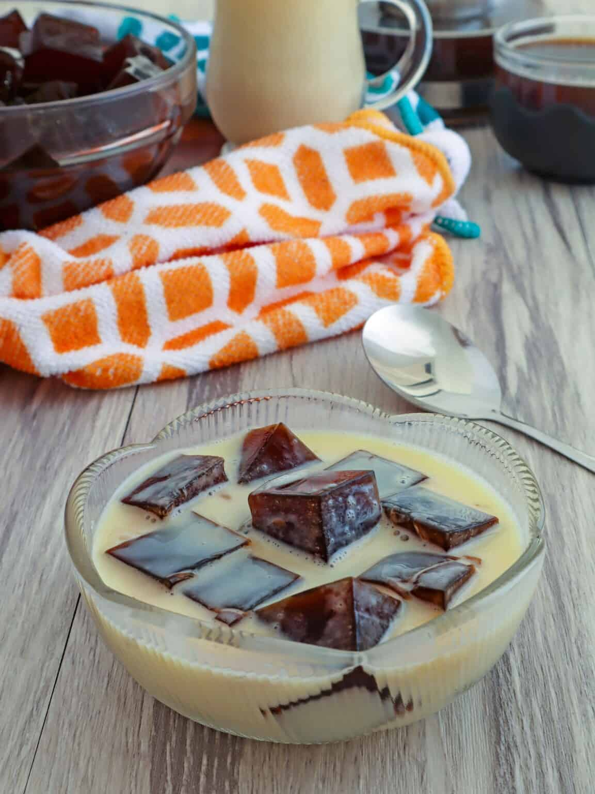

Coffee Jelly

Ingredients
| 1 box (1 ounce) unflavored gelatin |
| 4 cups water |
| 2 tablespoons instant coffee |
| ½ cup sugar |
| 1 can (14 ounces) condensed milk |
| 1 can (12.8 ounces) table cream |
Preparation
| Step 1 |
| In a large bowl, sprinkle the gelatin on the remaining 1 cup of cold water. Let stand for about 1 minute or until gelatin powder begins to bloom.In a sauce pot, bring 3 cups of the water to a boil. Add instant coffee and sugar. Stir until dissolved. |
| Step 2 |
| Gradually add the 3 cups of boiling coffee to the bloomed gelatin and stir constantly for about 2 to 3 minutes or until gelatin is completely dissolved and no granules are visible. |
| Step 3 |
| Transfer mixture into a baking dish and allow to completely cool. Refrigerate for about 2 to 3 hours or until completely set. In a bowl, combine condensed milk and table cream. Stir until blended. |
| Step 4 |
| Cut set gelatin into 1-inch cubes and divide into serving cups. Top with sweetened cream. Garnish with whipped cream, if desired. Serve cold. |